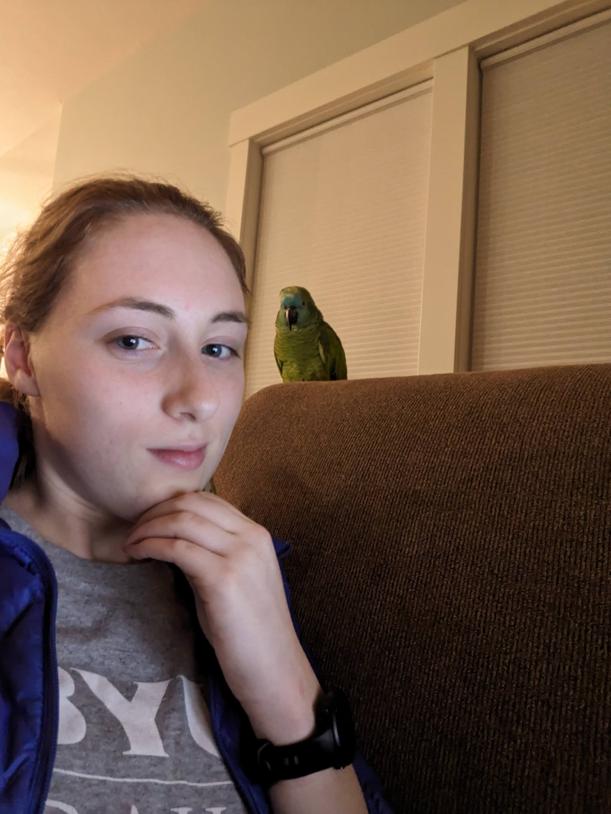

All About Me
Anya Kay
Hello! My name is Anya Kay. I am staring my first in-person semester at BYUI after being an online and concurrent student for about a year and a half. I have a small family with only one sibling, an older bother. We have a parrot named Cooper who is a handfull, but super funny and cute. I was rasied in Logan, Utah. I love reading, hiking, running, and learning. I will be leaving in January on a mission for Guatamala.
I love that at BYU-I I can have a good education that also focus on becoming more like Christ. I was born and raised in the Church of Jesus Chirst of Latter Day Saints and love attending the temple. I currently am a Ordinance Worker and it is amazing!
I am so excited to start this class and meet all of you!